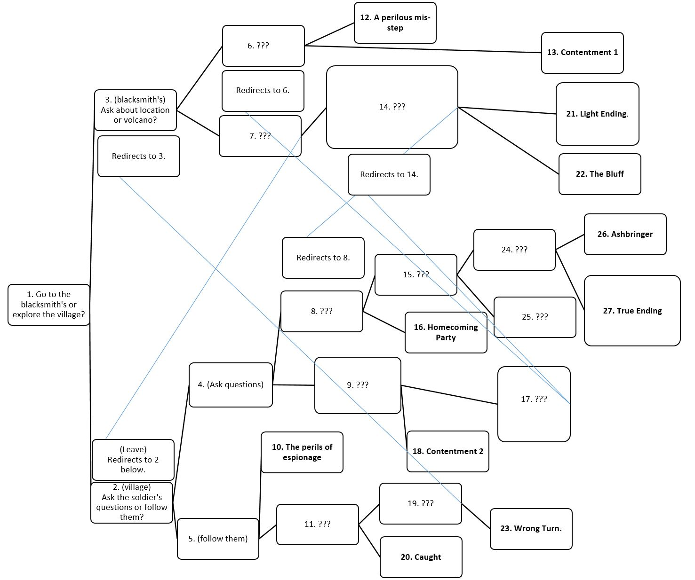

Below is a map of all the paths that might end up in this website with less spoilers and below that is an invisible second map with spoilers (hover if you dare!)

Map
Below is a map of all the paths that might end up in this website with less spoilers and below that is an invisible second map with spoilers (hover if you dare!)